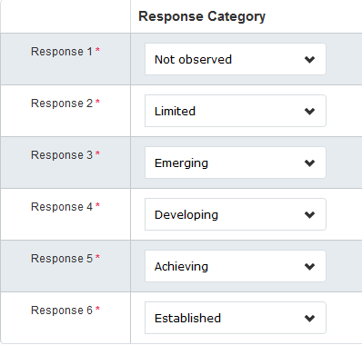
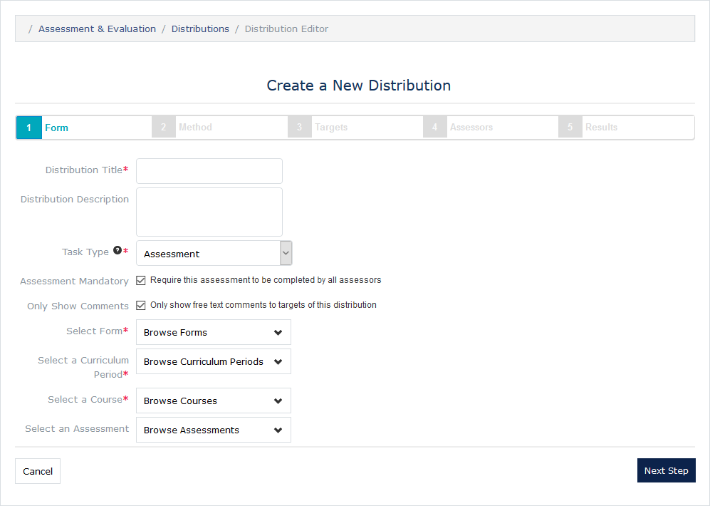
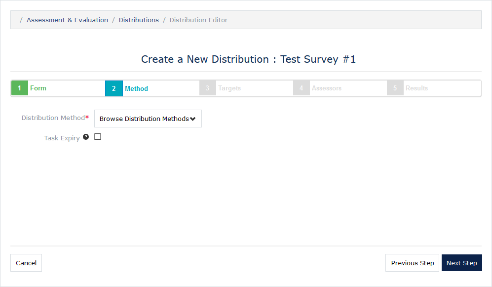
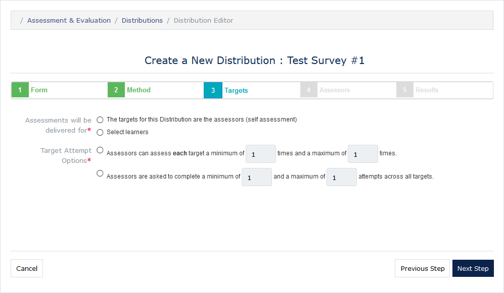
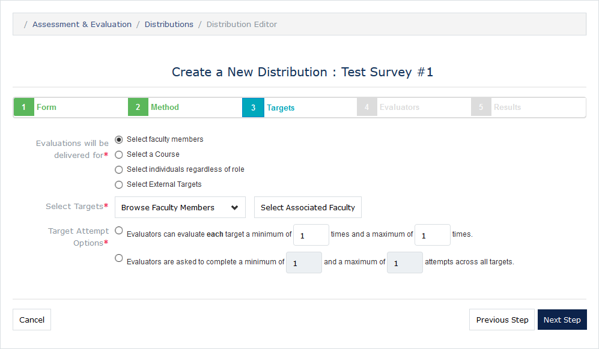
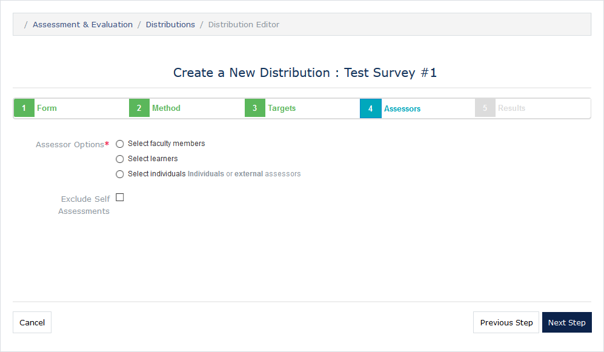
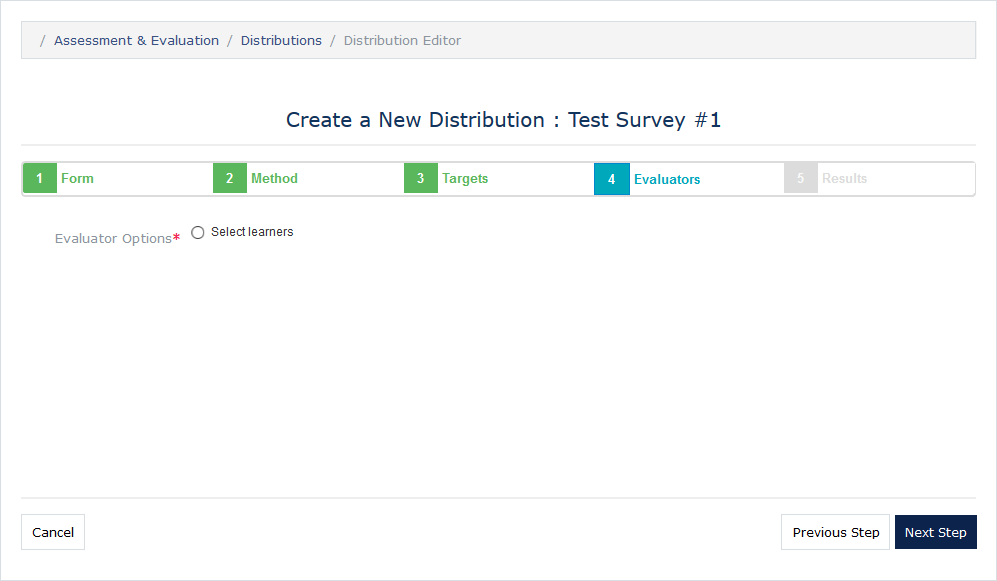
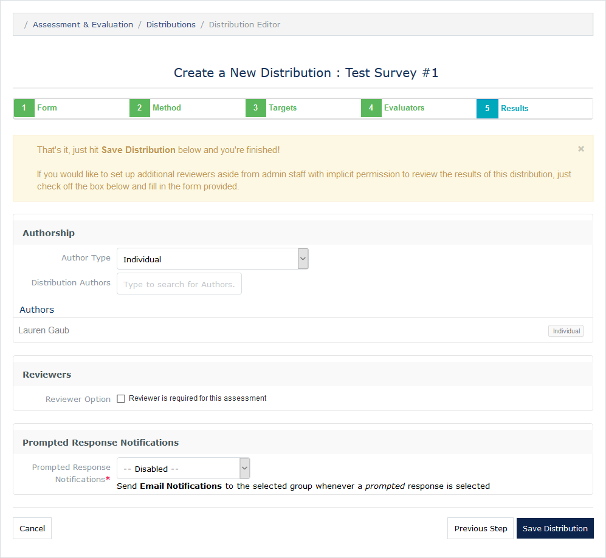

MedLearn - Manage Assessments & Evaluations (aka Surveys)
To manage assessments and evaluations, click on Admin / Assessment & Evaluation (Note: this is not the same as the Assessment & Evaluation link next to your name).
General Steps for Creating a Survey:
- Create items
- Create a form and attach the items created in step 1
- Create a distribution using the form created in step 2.
Dashboard
The dashboard of the Assessment & Evaluation module shows outstanding, upcoming, and deleted tasks for assessments and evaluations. First select Assessments or Evaluations, then select Outstanding, Upcoming or Deleted.
- Assessments: Generally the student is the target, and it contributes to the student's grade.
- Evaluations: Typically someone/something other than students is the target. For example, the target could be a faculty member, a course, or an event.
Scales
Rating scales establishes default response categories for items. For example, if you are creating five items all with the same response categories, you could use a rating scale to streamline the item creation process. An example of a rating scale is as follows:

Items
Items are what make up forms. You can create individual items or grouped items. Individual items are independent of any other questions on the form. Grouped items establish a rubric with common response categories, but multiple unique item text.
When creating an item you can choose from a variety of item types including the following:
- Horizontal/Vertical Multiple Choice (Single or Multiple Response)
- Dropdown (Single or Multiple Response)
- Free-Text Comments
- Date Selector
- Numeric Field
- Rubric Attribute
- Scale Item
Additionally, you will need to provide: The item text (what the assessors/evaluators are answering/responding to) An item code (optional) A rating scale (optional) If the item is mandatory or optional If comments are allowed for the item, and if they are required or optional If a default value should be selected/provided * The item responses and corresponding text, value, and category
Finally, you can associate a curriculum tag to the item. For graded items you MUST tag the corresponding competency so that the gradebook knows which competency the score contributes to when importing scores from an Assessment & Evaluation distribution. See Gradebook Section for more information.
Forms
Once you've created your items, you can now create a form. When you click the green Add Form button you will be prompted to enter the Form Name and Form Type. You will then be redirected to the form creation page. You can add a form description, items, grouped items, free-text, and curriculum tags.
Once items have been added to the form you can download a PDF of the form, preview the form, or copy the form.
Distributions
To actually send the form out for assessors/evaluators to complete, you will need to create a distribution.
Step 1: Form

Step 2: Method

Step 3: Targets
Options vary based on if assessment or evaluation was selected in Step 1.
Assessments

Evaluations

Step 4: Assessors/Evaluators
Options vary based on if assessment or evaluation was selected in Step 1.
Assessments

Evaluations

Step 5: Results
